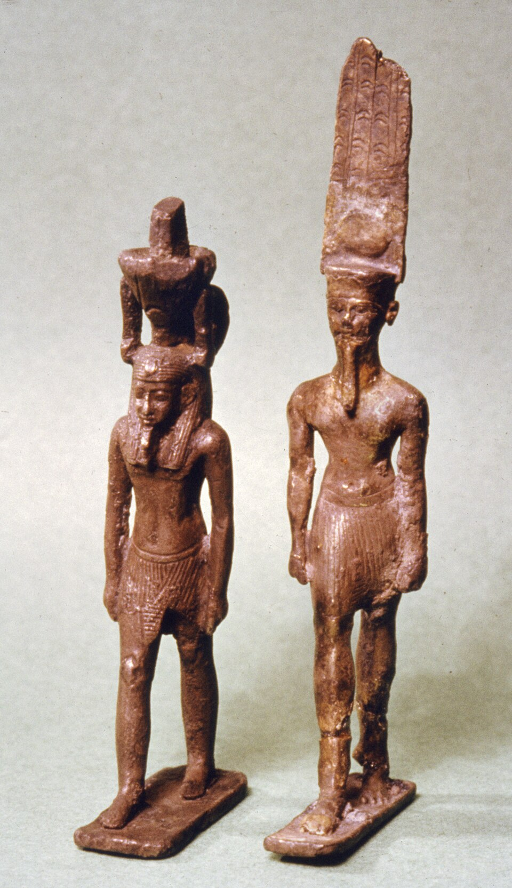

В начале мира, когда вода Нуна ещё не знала берегов, с первозданного холма поднялся лотос — и в его чашечке лежал младенец-солнце. Этот цветок, извергший свет из себя, — и есть Нефертем: «Прекрасный», чьё имя связано со словом «нефер» — красота, благоухание, совершенство. Он — лотос, ставший богом, и всё, что от него пошло: аромат, мазь, бальзам, парфюмерия.
Его называют «благовонием в ноздрях Ра»: утренний лотос раскрывается, когда солнце касается его лепестков, и наполняет небо ароматом — так бог-цветок служит солнцу дыханием. Жрецы окуривали храмы мимрой и лотосовым маслом «от Нефертема»; без его запаха не открывалась ни одна служба.
Сын Птаха и Сехмет
В Мемфисе у Птаха и Сехмет — сын Нефертем: третий в великой триаде. Где отец — ремесло и творчество слова, а мать — жгучее солнце врачевания и гнева, там сын — аромат и красота как целебная сила. Триада держит мир целиком: замысел, лечение, благоухание — от замысла мира до его «запаха жизни».
Лекарь и парфюмер
Нефертем — бог мазей и бальзамов: всё, что втирают, окуривают и умащают, входит в его дело. Жрецы-врачи готовили курения по «книгам дома благовоний» и читали формулы его именем; амулеты с ним клали в гробы как охрану тлена. В «Книге Мёртвых» умершему желают «вдыхать мимру Нефертема» — то есть вкусить вечную свежесть. Здесь он и бог-консервант: лотос не вянет, его аромат — жизнь вне гниения.
Как его видеть
- Юноша с лотосом на голове: лепестки иногда обвивают всю голову, как шлем — так его изображают с Нового Царства.
- В руках — скипетр и иногда сам цветок; на троне — с Птахом и Сехмет (стелы Серапеума и Мемфиса).
- На папирусах — «Нефертем на ладье»: сидит в носу солнечной барки и, когда кланяется Ра, на небо сходит роса; когда выпрямляется — рассветает. Простой миф о круге дня.
- В бальзамировочных текстах «дом Нефертема» — мастерская ароматов.
Роса и закат
Ежедневный миф Нефертема скромен и глубок: цветок на носу ладьи склоняется — и на землю падает роса (слёзы аромата); поднимается — и раскрывается заря. Оттого его паре с лотосом уподобляли душу: она тоже «склоняется в ночь и поднимается в утро». Лотос, спящий под водой всю ночь и всплывающий на рассвете, — одна из самых египетских картин воскресения (см. скарабей).
Интересные факты
- Его имя писалось иероглифом лотоса (M169) — редкий случай, когда знак имени есть сам бог.
- В поздние века Нефертем «вырос» в целителя: его имя ставили на остраконах-заклинаниях от боли.
- Греческие авторы путали его с Адонисом и с «Ароматной розой» — так египетского бога лотоса перелицовывали в чужих мифах.
- «Нефер» — корень десятков египетских слов (неферт — добро, нефер-неферу — прекрасно прекрасными); Нефертем — красота, ставшая существом.